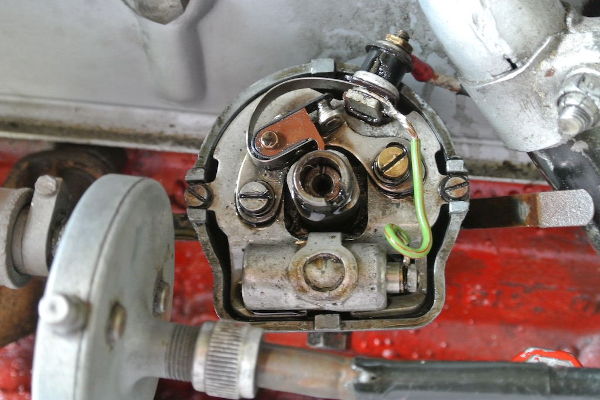
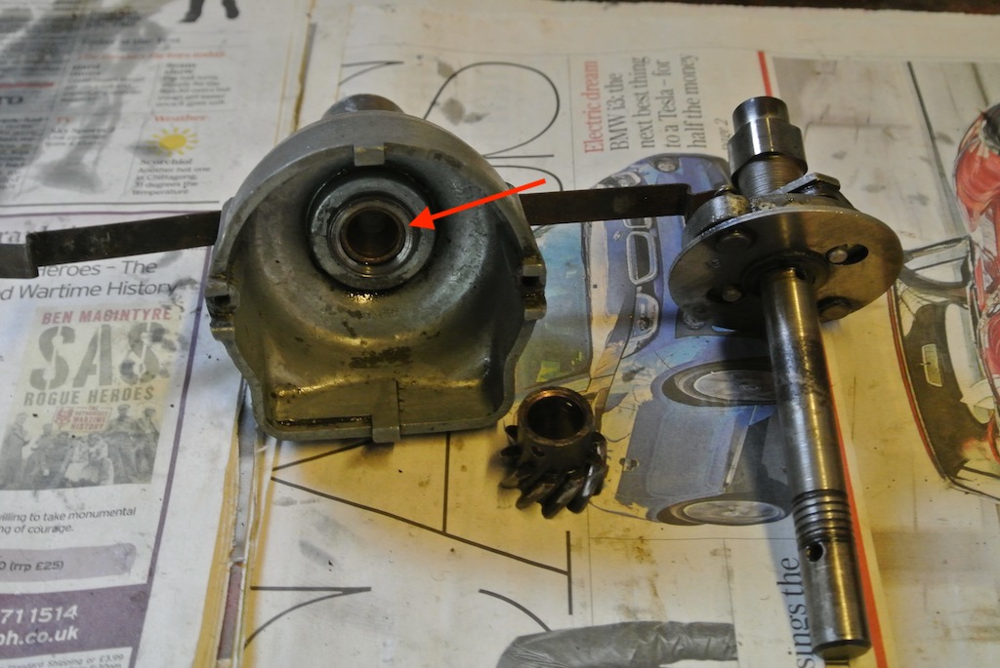
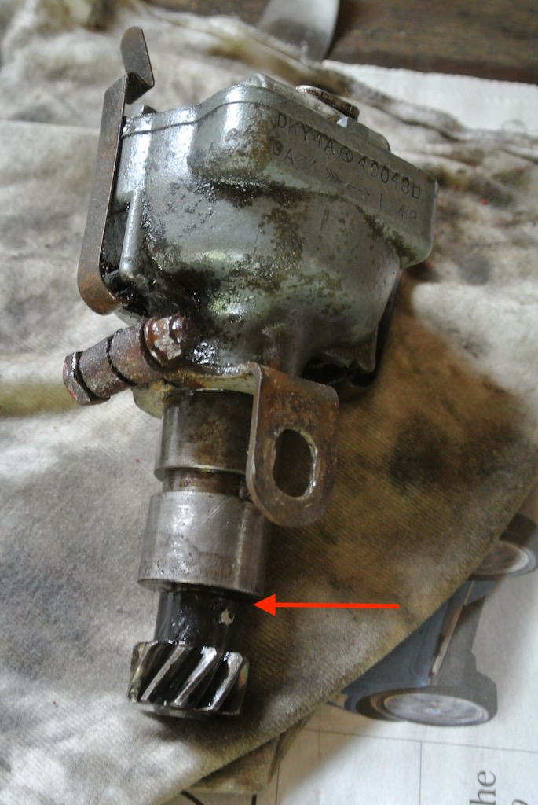
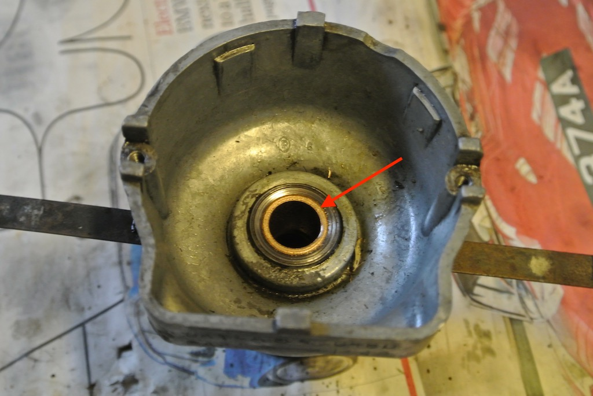

Technical Tip - Distributor Bushes
Modern-day cars invariably use electronic ignition timing, but our cars were all built with a mechanical device to cause the spark to occur at the right time in the right cylinder; the distributor. Mostly we clean (or replace) and set the points, clean inside the cap and perhaps replace the rotor arm, vary the rotational position of the distributor to adjust the ignition timing and add a drop or two of oil into the top of the shaft. But that shaft rotates at half the speed of the crankshaft, without bearings, just a couple of bronze bushes. The shaft that goes through those bushes often has a spiral groove that is designed to push the oil back down into the engine block.
When I inspected the distributor on TC4985 I found a lot more oil under the cap than I had expected (and ever seen on other cars). Together with some timing variation it suggested that something was not quite right. To check the wear in the bushes you can turn the engine until the points are just about to open, then push a wooden wedge between the shaft and the condenser (both of which you can seen in the photo), just with thumb pressure, and measure the points gap. In my case it was 18 thou, when it should be no more than 2 or 3 thou! I also found that I could move the distributor shaft up and down by about 60 thou when the end float should not be more than 40 thou. In fact, when I removed the distributor there was no thrust washer, which should be between the body of the distributor and the gear. So I bought two new bushes and a thrust washer from ‘The Distributor Doctor’.
 After removing the top plate, pushing out the pin that holds the gear wheel to the shaft and removing the gear, the shaft, with the ignition advance weights, can be removed. The first action is to remove the two old bushes. In the photo you can just see the end of the top bush in the centre of the distributor bowl.
 To pull out the bushes requires getting something on the inside end of the bush. I made a tool by filing flats on a washer so that it would slide through the bush and then rotate to fit against the end of the bush. I could then drop a bolt through the washer, put a socket on the end and tighten a nut so as to pull the bush out. In my case this worked for one bush, but I had to hammer the bolt head so as to remove the second bush.
To pull out the bushes requires getting something on the inside end of the bush. I made a tool by filing flats on a washer so that it would slide through the bush and then rotate to fit against the end of the bush. I could then drop a bolt through the washer, put a socket on the end and tighten a nut so as to pull the bush out. In my case this worked for one bush, but I had to hammer the bolt head so as to remove the second bush.
The new bushes were a nice fit on the distributor shaft, but they are an interference fit into the distributor body and so need to be pressed in. The recommended method is to soak the new bushes in engine oil for a couple of hours so as to impregnate them with oil and then put them in the freezer (in a plastic bag) for an hour to contract them. Then heat the body of the distributor with a heat gun. I found it was still necessary to put a wooden block over the end of the bush and hammer it quite hard to get it in.
Having got both new bushes in the body of the distributor I found that the shaft would not now go into the bushes! Luckily, a friend had a set of adjustable reamers. So we reamed the bores of the bushes until the shaft fitted.
When I tried to assemble the distributor I found that, with the new thrust washer, the gear would not go far enough on to the shaft to get the pin into the hole. So I reassembled the tool and pulled the lower bush a few thou further in. The final photo shows the new top bush in place.
After reassembling the distributor and installing it, you need to set the timing. However, you need to remember that the the gear is spiral and so the distributor rotates as you drop it in to the engine block. In the case of TC4985, the engine then seemed to run more smoothly and with increased power and there is no oil in the distributor cap (so I must remember to put a few drops of oil into the top of the shaft when I service the car).
The distributor is an effective, but mechanically fairly crude device, with plenty of opportunity for wear. And our cars usually have enough miles on the clock to make that a distinct possibility.
(Written 15th September 2017; published in WSMGOC Main Gear, October 2017.)© David James 2020 Last updated: 21st April 2020